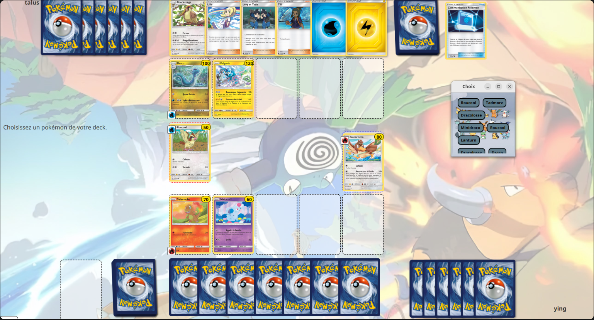

Projet 3 : Backend de Pokémon TCG
Conception et développement complet du backend de l’application Pokémon TCG. L’objectif était de recoder toutes les fonctionnalités liées aux cartes Pokémon en Java, en respectant les tests unitaires fournis par les enseignants.
Contexte
Période : Mars – Avril 2025.
Projet réalisé en équipe de 2 personnes. Nous devions reprendre un front-end fonctionnel existant et implémenter entièrement le backend pour gérer toutes les fonctionnalités des cartes Pokémon (attaques, talents, effets spéciaux, etc.).
Rôle
En tant que développeur principal :
- Implémentation de toutes les fonctions liées aux cartes Pokémon : attaques, talents, effets spéciaux.
- Respect des tests unitaires fournis pour garantir la validité de l’implémentation.
- Utilisation intensive de Git pour la gestion des versions et la collaboration avec le coéquipier.
- Contribution à la logique métier et à la cohérence de l’application.
Compétences utilisées
- Java (backend orienté objet)
- Gestion de projet classique
- Tests unitaires
- Git pour le versioning et collaboration
Apports & apprentissages
- Découverte et goût pour le développement backend.
- Respect strict de la logique métier et des tests unitaires.
- Renforcement des compétences en travail d’équipe et gestion de projet.
- Capacité à reprendre un front existant et à implémenter un backend complet en Java.
Captures d’écran
